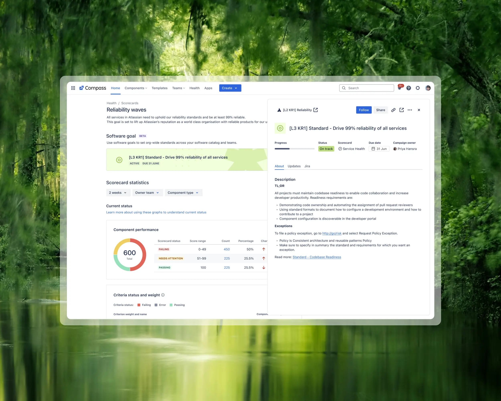
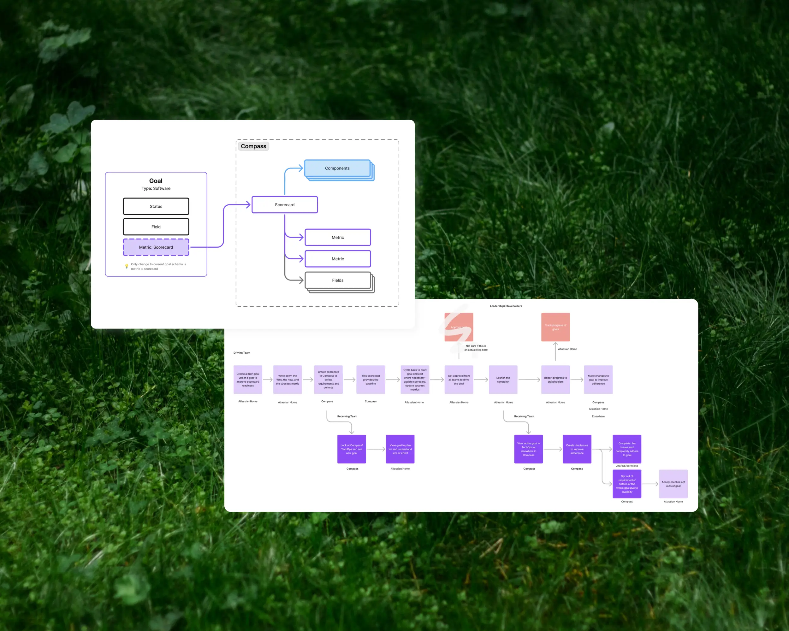
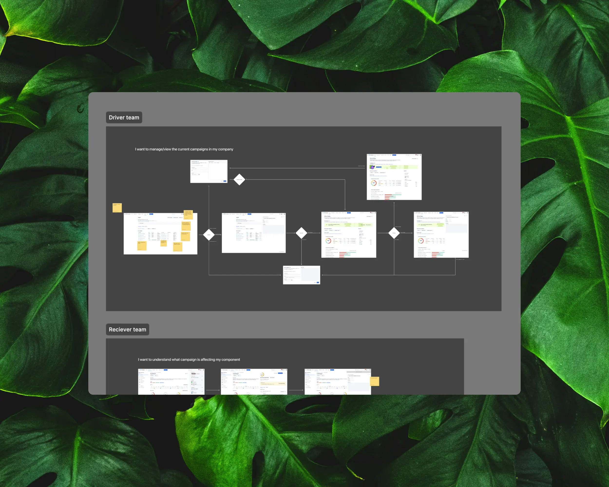
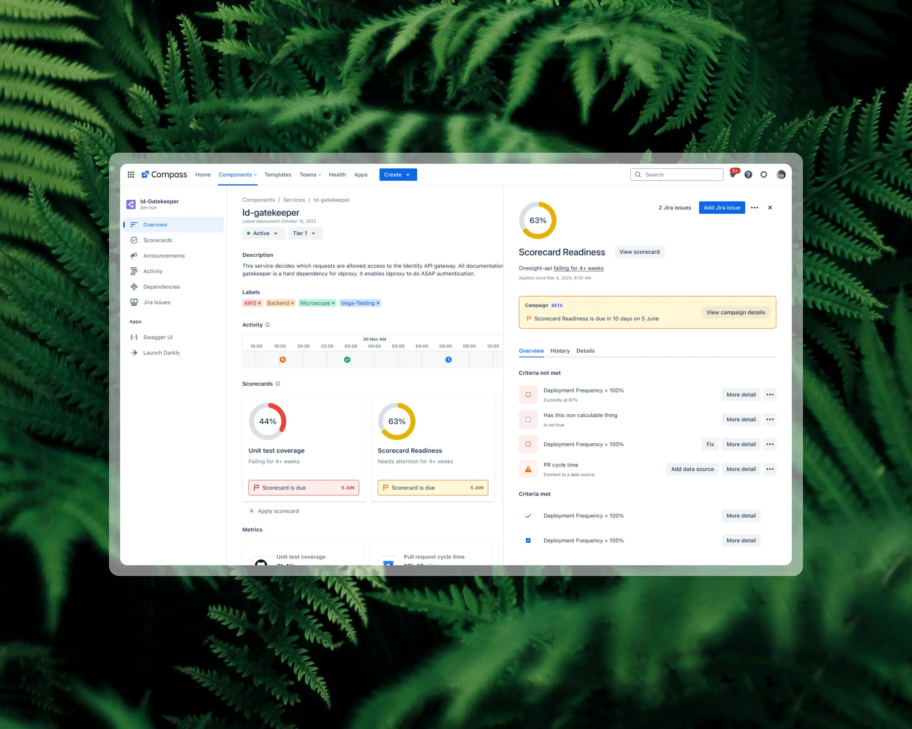
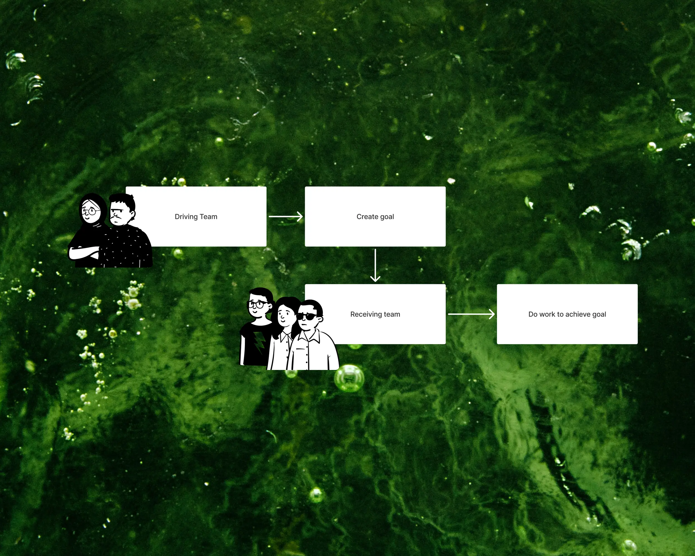
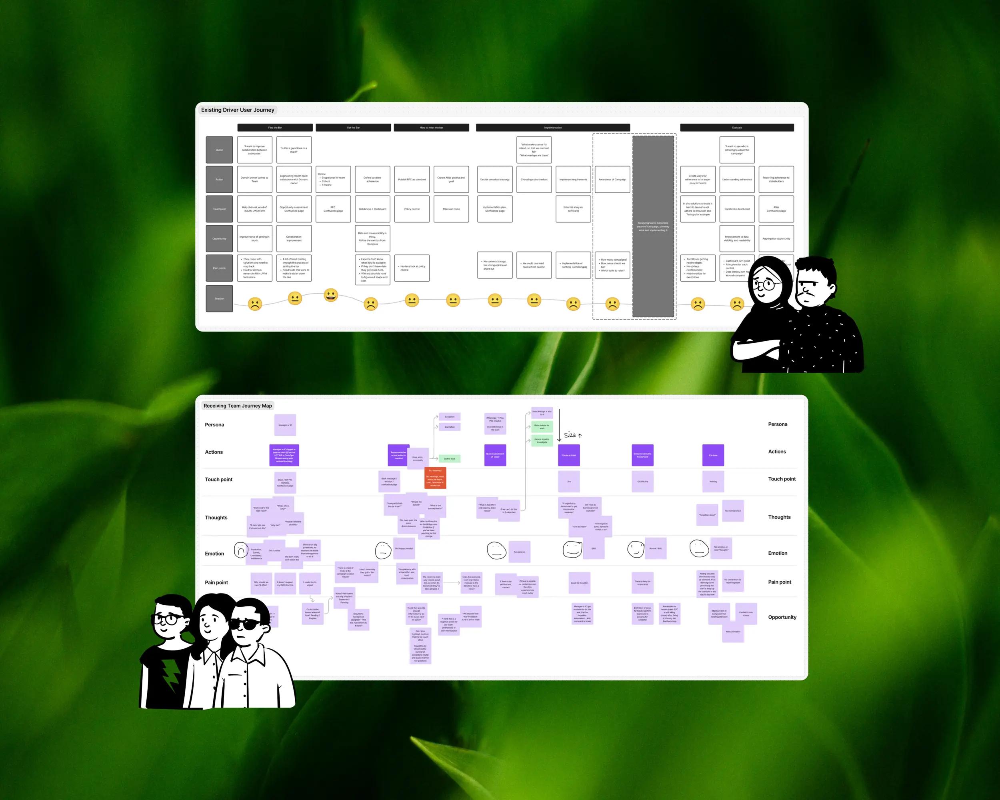
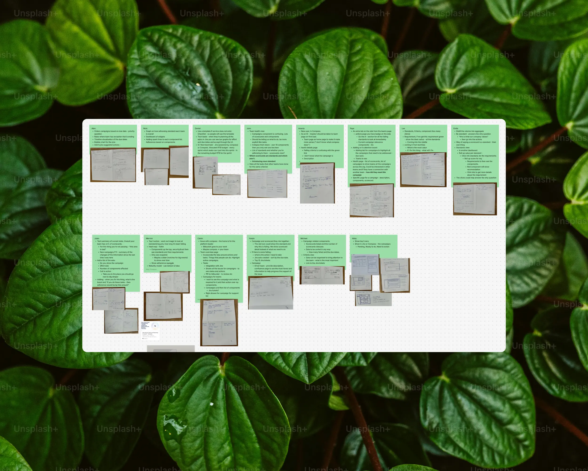
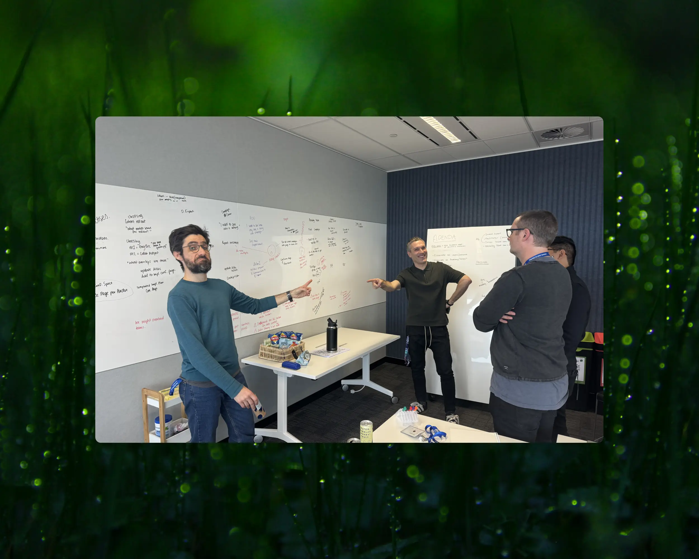

2023 – 2024
Atlassian
About
Every engineering organisation has a version of this ritual. A central team decides that services should log properly, page the right on-call, or clear their vulnerabilities, then spends months chasing hundreds of other teams until the dashboards turn green. At Atlassian it was called engineering health goals, and it was one of the main ways the company kept its own software honest. It ran on Confluence pages and an internal tool. None of it touched Compass, the product Atlassian sells for exactly this job.
I was the designer asked to close that gap: take a practice the company had spent years refining and make it a feature, one that served the internal team from day one and shipped to customers as the same thing.
Outcome
It landed. We put an M0 in front of Atlassian’s own engineers, kept it deliberately small, create a goal, edit it, view it, and used the internal rollout to prove the idea before taking it wider.
The target was 200 teams engaging with a goal. We reached 276, near the 300 stretch and around 59% of every team it could apply to. Of the people who met the module, 58% went on to act inside Compass, nearly double the pull of comparable internal tools. Fifty to a hundred teams touched a goal every week, and views of the health details page more than doubled once goals started sending people there.




What shipped leaned hard on what Compass already had. A goal is Atlassian’s own goal object, aimed at a scorecard, with the teams in scope attached, so it read as part of the product rather than a bolt-on. M0 went out, a fast round of research came back, and that feedback set the shape of M1.
Problem
The practice had three beats: understand the bar, set the bar, measure the bar. A driver team defined a standard and how it would roll out. Receiving teams did the work. Results gathered in the internal ops tool, or rolled up into a Confluence doc for a leader to read.
Every handoff lost something. A driver team could not see, in one place, how their goal was tracking across the org. A receiving team often did not know a goal applied to them, or what finished looked like for their service. Leaders asked where things stood and got a slide. The data existed. It was spread across enough surfaces that nobody quite trusted the picture.

This was never just a UI problem. It was taking something the company did well but informally, and giving it a spine that could scale without losing what made it work.
Research
The internal team had been running this for years, so I started there. A series of workshops pulled apart their language, the stakeholders at each step, and the points where the process hurt most. That became the model everything else hung off.



Alongside it, the PM and I took apart how other tools frame the same idea, a standard pushed to many teams and tracked to done, to sort convention from the calls that were ours to make. Once M0 was in real hands, a short research pass told us what to fix first.
Learnings
Productising an internal practice is mostly translation, and the danger is flattening it. The team had solved the hard part long ago. My job was to carry that across without tidying away the parts that looked messy but mattered. Hours in their workshops were worth more than any design done away from them.
Reusing the object model paid for itself. Anchoring goals to the scorecard and goal object Compass already had meant one feature could serve the internal team and customers at once, rather than two that drift apart.
And a thin M0 to a known audience beat a polished guess. Atlassian’s own engineers gave us honest usage and honest feedback in weeks, and the numbers said the idea held before we spent a milestone on it.